<title>Steady Bottom Bar</title>
<meta name="claude:viewport-fit-sides" content="cover">
<link rel="stylesheet" href="https://fonts.googleapis.com/css2?family=Inter:wght@400;500;600&family=Space+Grotesk:wght@500;600&display=swap">
<style>
/* Layout: one column of pictures, each with its numbers beside it as a caption strip. */
:root { --bg:#f3f4f6; --fg:#16191d; --muted:#5b6370; --panel:#ffffff; --line:#d9dde3; --accent:#1f8fa8;
  --display:"Space Grotesk",Inter,system-ui,sans-serif; --body:Inter,system-ui,sans-serif; }
@media (prefers-color-scheme: dark) { :root:not([data-theme="light"]) { --bg:#0f1215; --fg:#e8ebee; --muted:#98a1ad; --panel:#171b20; --line:#2a3038; --accent:#5cc4dc; color-scheme:dark } }
:root[data-theme="dark"] { --bg:#0f1215; --fg:#e8ebee; --muted:#98a1ad; --panel:#171b20; --line:#2a3038; --accent:#5cc4dc; color-scheme:dark }
body { background:var(--bg); color:var(--fg); font:15px/1.55 var(--body); padding-left:max(16px,env(safe-area-inset-left,0px)); padding-right:max(16px,env(safe-area-inset-right,0px)); padding-block:32px 48px }
main { max-width:1000px; margin:0 auto; display:grid; gap:28px }
h1 { font:600 2rem/1.15 var(--display); margin:0; text-wrap:balance }
h2 { font:600 1.15rem/1.3 var(--display); margin:0 }
p { margin:0; max-width:68ch }
.lede { color:var(--muted) }
figure { margin:0; background:var(--panel); border:1px solid var(--line); border-radius:10px; overflow:hidden }
figure img { display:block; width:100% }
figcaption { padding:12px 16px; display:flex; flex-wrap:wrap; gap:6px 18px; font-size:.9rem; color:var(--muted) }
figcaption b { color:var(--fg); font-weight:600 }
.k { font-variant-numeric:tabular-nums; color:var(--accent); font-weight:600 }
.pair { display:grid; grid-template-columns:1fr 1fr; gap:16px }
@media (max-width:700px) { .pair { grid-template-columns:1fr } }
ul { margin:0; padding-left:1.2em; display:grid; gap:4px }
kbd { font:600 .85em var(--body); border:1px solid var(--line); border-radius:4px; padding:0 5px; background:var(--panel) }
</style>
<main>
  <header style="display:grid;gap:8px">
<main>
  <header style="display:grid;gap:8px">
    <h1>Steady bottom bar</h1>
    <p class="lede">The minimap now sits in the bottom bar at every zoom, at the bar's height, so zooming no longer rearranges the bar. Pictures are the bottom of a 1920×1080 frame, 4 s into a squad round, from the cloud's software GPU. "Zoomed out" is the whole map; "zoomed in" is the opening close view.</p>
  </header>

  <section style="display:grid;gap:12px">
    <h2>Before, 100% UI</h2>
    <figure>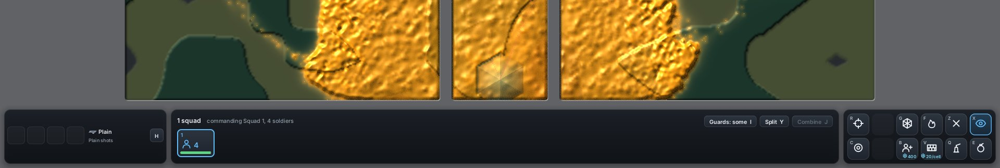<figcaption><b>Zoomed out</b> no minimap · bar <span class="k">113 px</span> · command card at the right edge</figcaption></figure>
    <figure>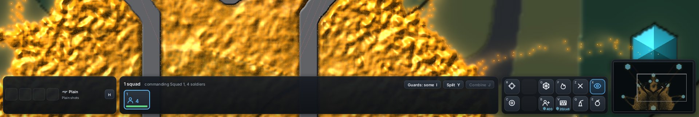<figcaption><b>Zoomed in</b> minimap appears, <span class="k">152 px</span> tall, above the bar · command card and selection pushed left</figcaption></figure>
  </section>

  <section style="display:grid;gap:12px">
    <h2>After, 100% UI</h2>
    <figure>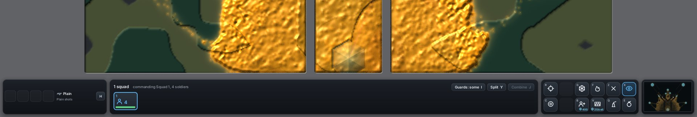<figcaption><b>Zoomed out</b> minimap in the row · bar <span class="k">104 px</span> (panels at 92%)</figcaption></figure>
    <figure>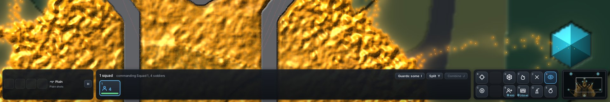<figcaption><b>Zoomed in</b> the same layout, pixel for pixel (test <code>the_bottom_bar_and_minimap_stay_put_at_every_zoom</code>)</figcaption></figure>
  </section>

  <section style="display:grid;gap:12px">
    <h2>After, 150% and 200% UI</h2>
    <figure>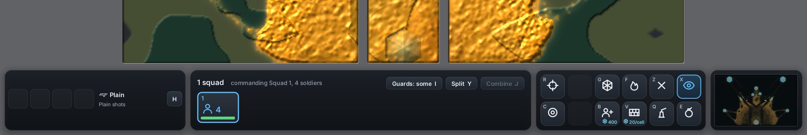<figcaption><b>150%, zoomed out</b> bar <span class="k">156 px</span></figcaption></figure>
    <figure>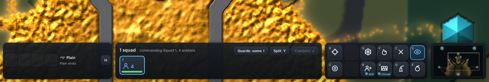<figcaption><b>150%, zoomed in</b> same layout</figcaption></figure>
    <figure>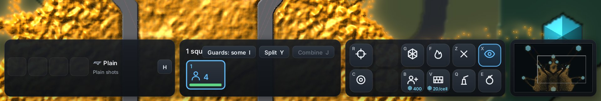<figcaption><b>200% (capped at 1.9 on 1080 lines)</b> the gun cards keep their own panel at the left, the minimap stays in the row</figcaption></figure>
  </section>

  <section style="display:grid;gap:12px">
    <h2>Start menu and Ctrl +/-</h2>
    <p>Every menu page used to be held to the Options page's height, so with a dozen options the main page stopped growing past about 100% on a 1080-line screen. Now the main page and the campaign list are held by their own rows.</p>
    <div class="pair">
      <figure>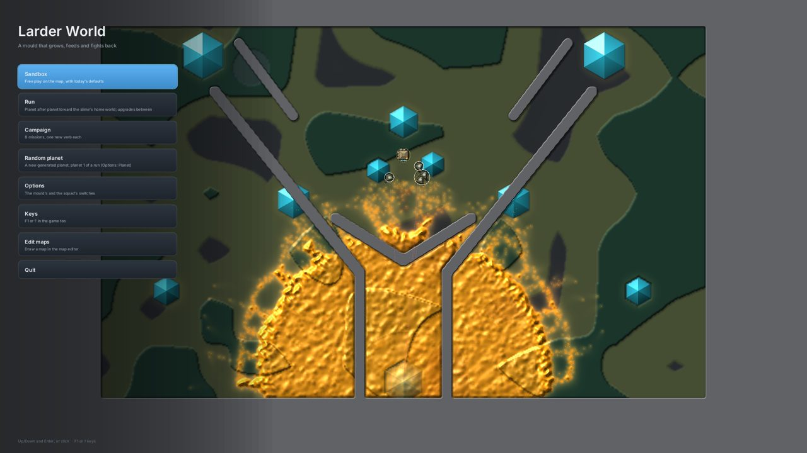<figcaption><b>Before, 100%</b></figcaption></figure>
      <figure>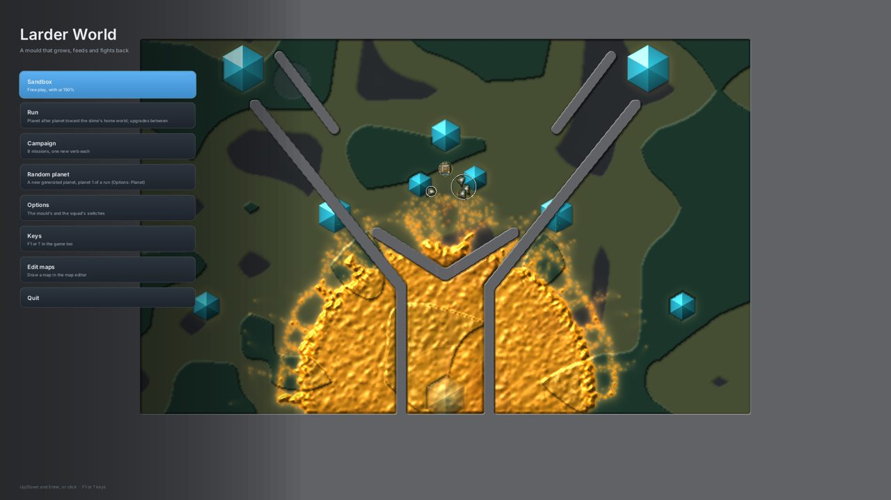<figcaption><b>Before, 150%</b> barely bigger</figcaption></figure>
      <figure>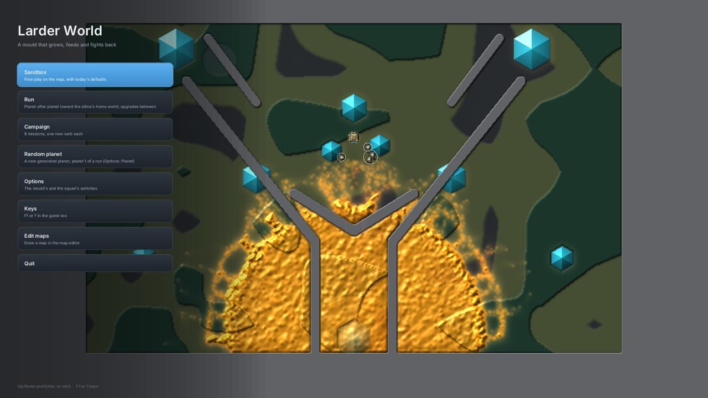<figcaption><b>After, 100%</b></figcaption></figure>
      <figure>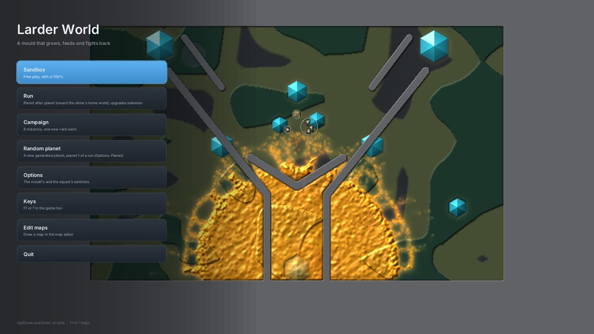<figcaption><b>After, 150%</b> grows with the setting</figcaption></figure>
    </div>
  </section>
</main>
